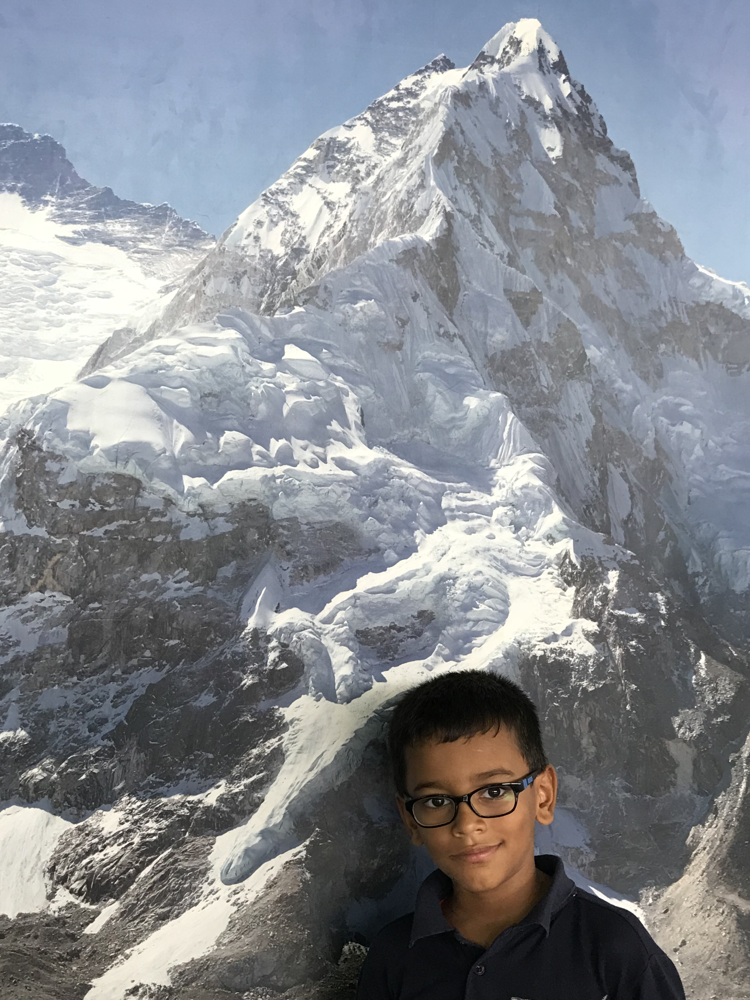

|
ABOUT ME | TRAVEL BLOG | MY FAMILY | CONTACT ME |
|---|
 In this tab, I will be talking about my travels. My favourite travel was when I went to Somnath, Dwarka and Ahmedabad with my parents, brother and grandmother. It was very fun. I like to treck and I have been on 3 trecking holidays. I have been to singapore twice, once when I was 1 year and once when I was 5 years. I loved the transformer ride is universal studios.
 In hong kong, I stayed on the 117th floor of the hotel, then I went to disneyland. there,
there were many fun rides.
I have also gone to a place called bekal, which was one of my most favourite holidays.
I want to go go to places like USA, dhubai, london and other places.
In hong kong, I stayed on the 117th floor of the hotel, then I went to disneyland. there,
there were many fun rides.
I have also gone to a place called bekal, which was one of my most favourite holidays.
I want to go go to places like USA, dhubai, london and other places.